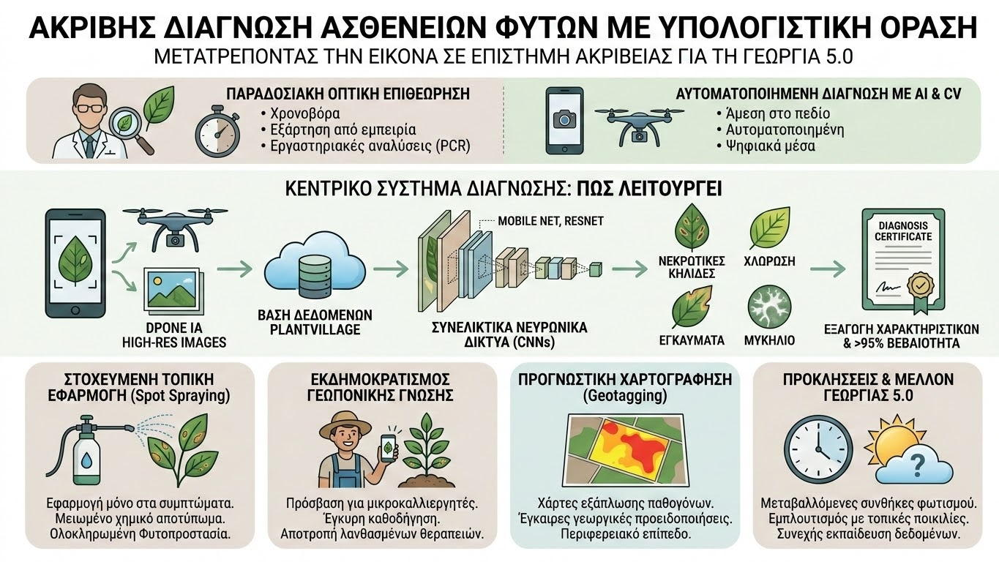

Η έγκαιρη και ακριβής διάγνωση των ασθενειών των φυτών αποτελεί έναν από τους κρισιμότερους παράγοντες για τη διασφάλιση της παγκόσμιας επισιτιστικής ασφάλειας και τη μείωση των οικονομικών απωλειών στην αγροτική παραγωγή. Παραδοσιακά, η αναγνώριση των συμπτωμάτων βασιζόταν στην οπτική επιθεώρηση από έμπειρους γεωπόνους ή σε χρονοβόρες εργαστηριακές αναλύσεις (όπως η μέθοδος PCR). Σήμερα, η σύγκλιση της Γεωπονικής Επιστήμης με την Τεχνητή Νοημοσύνη (AI) και την Υπολογιστική Όραση (Computer Vision) προσφέρει αυτοματοποιημένες λύσεις άμεσης διάγνωσης στο πεδίο με τη χρήση απλών ψηφιακών μέσων.
Η τεχνολογική βάση αυτών των συστημάτων στηρίζεται στα Συνελικτικά Νευρωνικά Δίκτυα (Convolutional Neural Networks - CNNs), μια εξειδικευμένη κατηγορία αρχιτεκτονικών βαθιάς μάθησης (Deep Learning) που παρουσιάζει εξαιρετική αποτελεσματικότητα στην επεξεργασία και ανάλυση εικόνων. Τα δίκτυα αυτά εκπαιδεύονται σε εκτεταμένα σύνολα δεδομένων (όπως το ανοιχτό αποθετήριο PlantVillage), τα οποία περιλαμβάνουν δεκάδες χιλιάδες φωτογραφίες υγιών και προσβεβλημένων φύλλων από διάφορες καλλιέργειες, μαθαίνοντας να αναγνωρίζουν εξαιρετικά πολύπλοκα οπτικά μοτίβα, όπως νεκρωτικές κηλίδες, χλώρωση, περιφερειακά εγκαύματα ή αναπτύξεις μυκηλίου.

Κατά την εφαρμογή στο πεδίο, ο παραγωγός μπορεί να τραβήξει μια φωτογραφία ενός ύποπτου φύλλου με το smartphone του ή να χρησιμοποιήσει εικόνες υψηλής ανάλυσης από **μη επανδρωμένα αεροσκάφη (Drones)**. Το εκπαιδευμένο μοντέλο επεξεργάζεται την εικόνα μέσα σε λίγα δευτερόλεπτα, εξάγει τα χαρακτηριστικά γνωρίσματα της πιθανής προσβολής και επιστρέφει το αποτέλεσμα με ένα ποσοστό στατιστικής βεβαιότητας. Σε πολλές περιπτώσεις, η ακρίβεια ταξινόμησης των σύγχρονων μοντέλων (όπως το ResNet ή το MobileNet) ξεπερνά το 95%-98%, προσεγγίζοντας ή και ξεπερνώντας την ικανότητα ενός ανθρώπου-εμπειρογνώμονα.
Η ενσωμάτωση της υπολογιστικής όρασης στη σύγχρονη ολοκληρωμένη φυτοπροστασία προσφέρει σημαντικά πλεονεκτήματα:
- Στοχευμένη Τοπική Εφαρμογή (Spot Spraying): Αντί για καθολικούς ψεκασμούς σε ολόκληρο τον αγρό, ο συνδυασμός Computer Vision με έξυπνους ψεκαστήρες επιτρέπει την εφαρμογή φυτοπροστατευτικών προϊόντων αποκλειστικά στα σημεία όπου εντοπίζονται τα πρώτα συμπτώματα, μειώνοντας δραστικά το χημικό αποτύπωμα.
- Εκδημοκρατισμός της Γεωπονικής Γνώσης: Μικροκαλλιεργητές που δεν έχουν άμεση ή καθημερινή πρόσβαση σε εξειδικευμένους συμβούλους μπορούν να λάβουν μια πρώτη έγκυρη καθοδήγηση για τη φύση της προσβολής, αποτρέποντας λανθασμένες θεραπείες.
- Προγνωστική Χαρτογράφηση: Η γεωγραφική αναφορά (Geotagging) των διαγνώσεων επιτρέπει τη δημιουργία χαρτών εξάπλωσης παθογόνων σε περιφερειακό επίπεδο, βοηθώντας στην έγκαιρη έκδοση γεωργικών προειδοποιήσεων.
Παρά τις προκλήσεις που σχετίζονται με τις μεταβαλλόμενες συνθήκες φωτισμού στο ύπαιθρο και την ανάγκη για συνεχή εμπλουτισμό των δεδομένων εκπαίδευσης με τοπικές ποικιλίες, η Υπολογιστική Όραση αποτελεί έναν από τους πιο υποσχόμενους πυλώνες της Γεωργίας 5.0. Η ψηφιακή ανάλυση της εικόνας μετατρέπει την παραδοσιακή διάγνωση σε μια επιστήμη ακριβείας, προστατεύοντας το περιβάλλον και ενισχύοντας τη βιωσιμότητα της αγροτικής παραγωγής.